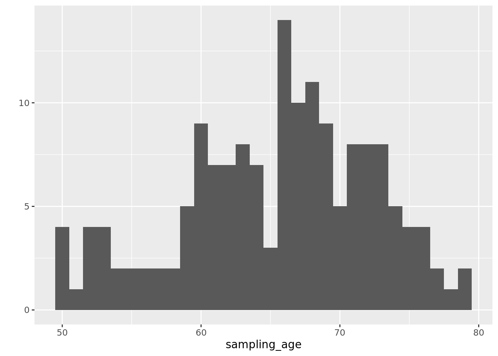
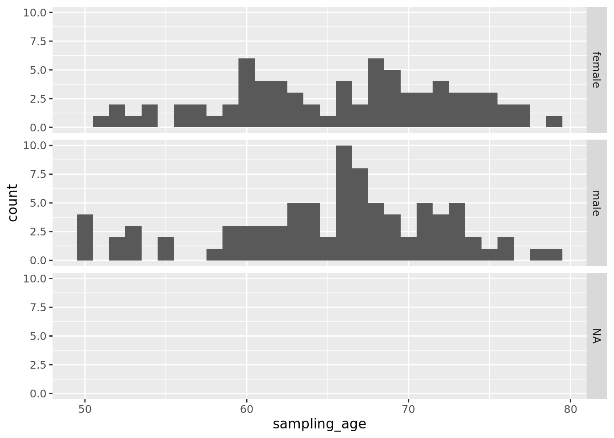
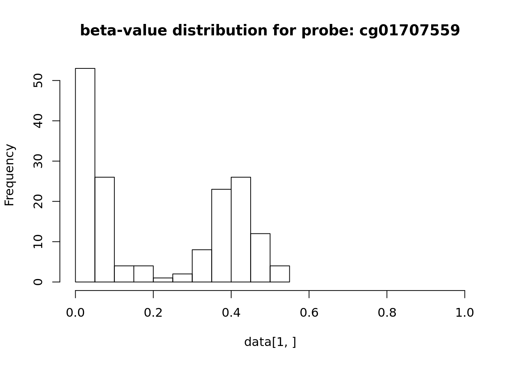
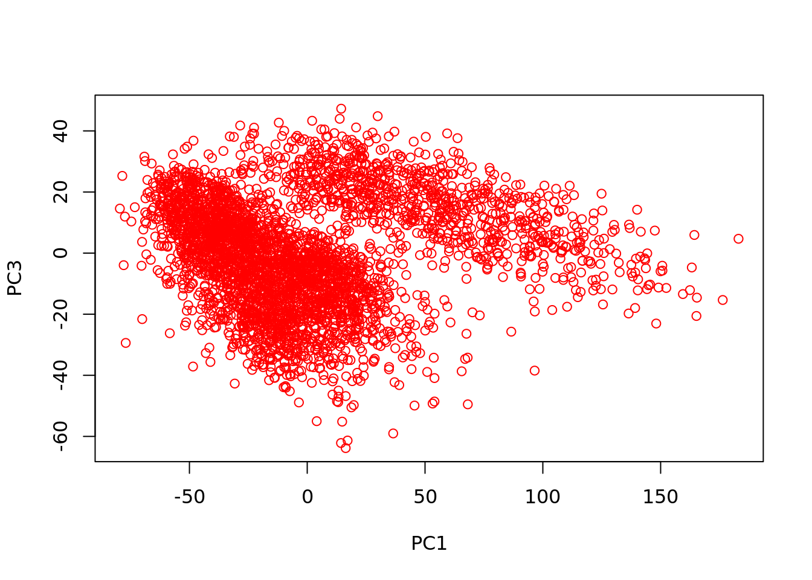
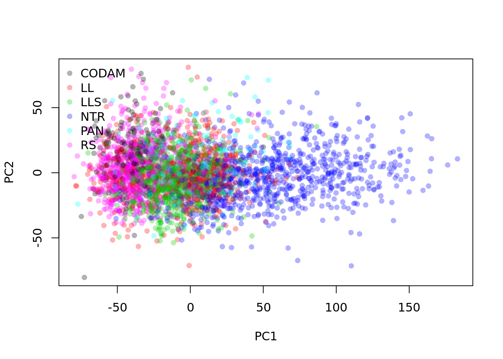

Load a dataset and inspect the colData using colData(dataset). The column-data contains information for each column. This can be phenotypic information; Sampling_Age, Sex or Height, blood parameters, such white blood cell counts or information specific to the omic data-type, e.g. in case of the array DNA methylation data, Hydridization_Data, Stain_Date, etc.
library(BBMRIomics)
bbmri.data(methData_Betas_CODAM_Freeze2_unrelated)
cData <- colData(betas)
cData[1:5, 1:5]## DataFrame with 5 rows and 5 columns
## uuid biobank_id gonl_id run_id
## <character> <character> <character> <character>
## BIOS6DB3BAD1 BIOS6DB3BAD1 CODAM NA 8667053102_R05C02
## BIOSAF9A6D98 BIOSAF9A6D98 CODAM NA 8655685094_R04C01
## BIOS6F87D650 BIOS6F87D650 CODAM NA 8667045002_R05C01
## BIOS0DA7A245 BIOS0DA7A245 CODAM NA 8667053158_R04C01
## BIOSBAB0BF11 BIOSBAB0BF11 CODAM NA 8655685007_R01C01
## sampling_age
## <integer>
## BIOS6DB3BAD1 78
## BIOSAF9A6D98 74
## BIOS6F87D650 63
## BIOS0DA7A245 66
## BIOSBAB0BF11 62Tabulation ca be used for inspection of the distribution of categorical variables.
## smoking
## sex current smoker former-smoker non-smoker
## female 13 35 26
## male 12 58 16Use plots for example, a histogram for inspection of the Sampling_Age distribution.
## `stat_bin()` using `bins = 30`. Pick better value with `binwidth`.## Warning: Removed 3 rows containing non-finite values (stat_bin).
## Min. 1st Qu. Median Mean 3rd Qu. Max. NA's
## 50.00 61.00 66.00 65.49 71.00 79.00 3Optionally stratify by Sex.
gp <- ggplot(as.data.frame(cData), aes(x=sampling_age))
gp <- gp + geom_histogram()
gp + facet_grid(sex~.)## `stat_bin()` using `bins = 30`. Pick better value with `binwidth`.## Warning: Removed 3 rows containing non-finite values (stat_bin).
For array DNA methylation the rowRanges contain the probe information provide by the FDb.InfiniumMethylation.hg19 Bioconductor annotation package. This package contains the same information as the Illumina Human DNA methylation 450k manifest file but in a convenient format, as GRanges-object.
## GRanges object with 484123 ranges and 10 metadata columns:
## seqnames ranges strand | addressA addressB
## <Rle> <IRanges> <Rle> | <character> <character>
## cg01707559 chrY 6778695-6778696 * | 45652402 64689504
## cg02004872 chrY 15815552-15815553 * | 25785404 58629399
## cg02494853 chrY 4868397-4868398 * | 58788384 71607362
## cg03244189 chrY 21238472-21238473 * | 14749415 45763392
## cg03706273 chrY 16635745-16635746 * | 66610451 32759443
## ... ... ... ... . ... ...
## ch.22.909671F chr22 46114168 * | 47797398
## ch.22.46830341F chr22 48451677 * | 29618504
## ch.22.1008279F chr22 48731367 * | 49664383
## ch.22.47579720R chr22 49193714 * | 53733426
## ch.22.48274842R chr22 49888838 * | 62659432
## channel platform percentGC sourceSeq probeType
## <Rle> <Rle> <numeric> <DNAStringSet> <Rle>
## cg01707559 Red HM450 0.76 CGCCCTCTGT...CCCAATTCGC cg
## cg02004872 Grn HM450 0.6 CGGCGGCGCT...AGAGGCATGT cg
## cg02494853 Grn HM450 0.7 CGCGGGCAGC...GCCCAGACAG cg
## cg03244189 Grn HM450 0.52 ATAGGGACGC...AGCGAAGGCG cg
## cg03706273 Grn HM450 0.58 AGCAGCACGG...TTCCAGCGCG cg
## ... ... ... ... ... ...
## ch.22.909671F Both HM450 0.34 CAGCAAATCA...GTAAGTGGTG ch
## ch.22.46830341F Both HM450 0.46 CAGCATCACA...TCCATTTTTC ch
## ch.22.1008279F Both HM450 0.56 CAAGACTCAT...GACTGTAGGG ch
## ch.22.47579720R Both HM450 0.6 CAGGCAAGGG...CTGGAGAGAG ch
## ch.22.48274842R Both HM450 0.58 ACTGACTGCA...CAACAGGAAC ch
## probeStart probeEnd probeTarget
## <character> <character> <numeric>
## cg01707559 6778695 6778744 6778695
## cg02004872 15815552 15815601 15815552
## cg02494853 4868349 4868398 4868397
## cg03244189 21238424 21238473 21238472
## cg03706273 16635745 16635794 16635745
## ... ... ... ...
## ch.22.909671F 46114168 46114217 46114168
## ch.22.46830341F 48451677 48451726 48451677
## ch.22.1008279F 48731367 48731416 48731367
## ch.22.47579720R 49193714 49193763 49193714
## ch.22.48274842R 49888838 49888887 49888838
## -------
## seqinfo: 24 sequences from hg19 genome## BIOS6DB3BAD1 BIOSAF9A6D98 BIOS6F87D650 BIOS0DA7A245 BIOSBAB0BF11
## cg01707559 0.05386254 0.03516259 0.35649128 0.04128348 0.04741600
## cg02004872 0.01552188 0.01815247 0.34117944 0.01727364 0.02168273
## cg02494853 0.04292021 0.02381752 0.03041396 0.06478056 0.01826110
## cg03244189 0.05019996 0.03196357 0.37829594 0.07053734 0.04926488
## cg03706273 0.06310767 0.01837788 0.09973393 0.03995083 0.01944075
See irlba
library(irlba)
bbmri.data(rnaSeqData_ReadCounts_BIOS_Freeze2_unrelated)
library(edgeR)
y <- DGEList(assays(counts)$data, remove.zeros=TRUE)## Removing 2907 rows with all zero counts## Importance of components:
## PC1 PC2 PC3
## Standard deviation 43.4520 20.04939 17.93061
## Proportion of Variance 0.1929 0.04108 0.03285
## Cumulative Proportion 0.1929 0.23402 0.26687
biobank <- factor(colData(counts)$biobank_id)
plot(pc$x, col=adjustcolor(as.integer(biobank), alpha.f = 0.3), pch=16)
legend("topleft", levels(biobank), col=adjustcolor(1:nlevels(biobank), alpha.f = 0.3), pch=16, bty="n") 